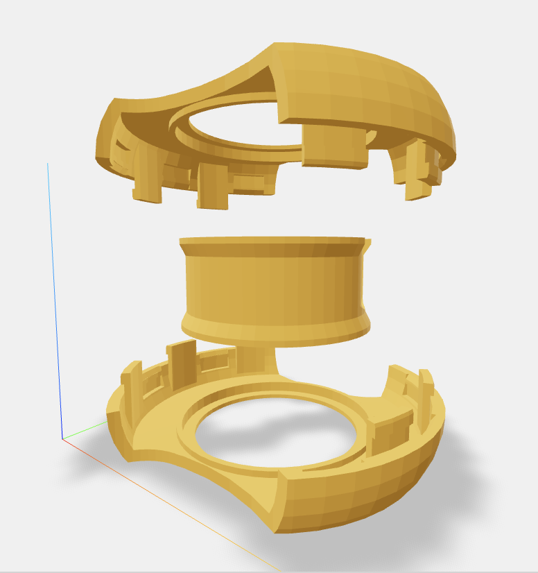

Parametric 3D models + Solana ownership
Parameters → Model → Minted Asset
Goal: make digital design ownership practical for physical objects.
Easy to copy.
No editable ownership.
Editable logic + parameters.
Real control over design.
Value is in the recipe, not the mesh.
Configure → Preview → Mint → Own → Regenerate
Same template, different owned configs.
Owner-only: wire, walls, ring offsets
Open artifacts & history
Ownership, provenance, edit rights
Open artifacts + on-chain control.
Blockchain stores control, not geometry.
Next: forks + royalties for template authors
Demo: https://3dmint.org · GitHub: https://github.com/maxistar/paramint-frontend